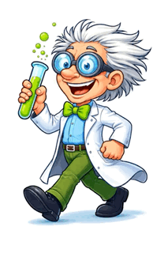

Soy Luis, investigador independiente enfocado en electrónica, ultrasonido, láseres y energías alternativas.
Desarrollo sistemas innovadores como transmisión de audio por láser, proyectos infrarrojos y prototipos experimentales.
Cada proyecto es personalizable y evoluciona durante su desarrollo.
✔ Maquetas personalizadas
✔ Audio por láser
✔ Sistemas infrarrojos
✔ Prototipos electrónicos
